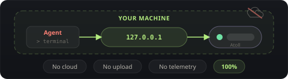
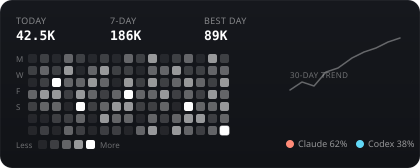
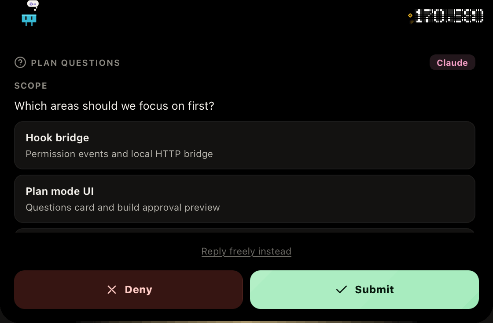
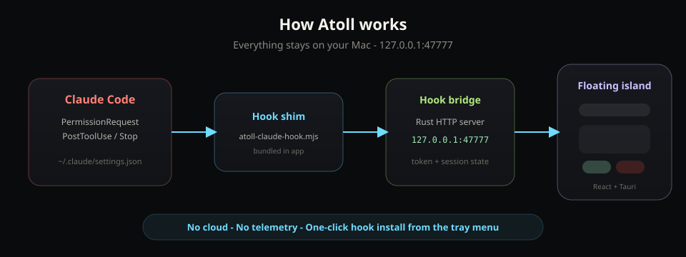
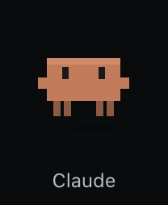
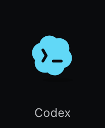

顶栏浮岛，零上下文切换
macOS 菜单栏 / Windows 工作区顶部，紧凑胶囊显示在线状态、活跃会话与待审批数量。有请求时自动展开，展示命令详情。
Atoll 是一个轻量桌面应用，住在屏幕顶栏。平时是紧凑胶囊，有请求时自动展开——全程本地，数据不出本机。
macOS 菜单栏 / Windows 工作区顶部，紧凑胶囊显示在线状态、活跃会话与待审批数量。有请求时自动展开，展示命令详情。
Hook 桥接 127.0.0.1:47777，所有数据留在本机。不联网、不上传、不追踪。

支持 Enter 批准、Delete 拒绝、Shift+Enter 永久放行。多 Session 并行，每个 Agent 有独立像素风 mascot。
$ npm test --run
解析 JSONL 会话记录，实时展示 Token 消耗热力图。多 Session 概览，终端里写代码也能掌握用量。

Claude Code 进入 Plan 模式时，Atoll 会识别 AskUserQuestion 与 ExitPlanMode 事件——在浮岛里回答规划问题、预览 Markdown 计划，再决定是否开始构建。
Agent 发起多选题或自由文本问题时，在顶栏选择选项、填写 Other，或切换 Reply freely 直接回复。
规划完成后展示 Markdown 预览。Continue Planning 继续打磨，Agree to Build 一键放行进入执行阶段。
v0.1.26 起支持 · 适用于 Claude Code Plan 模式

Plan questions → 选择范围 → Build approval → Agree to Build
Atoll 不替代 Agent，也不上传会话内容。Hook 把权限事件送到本机 bridge，顶栏浮岛读取状态并回传你的决定——全程在 127.0.0.1 闭环。

Claude Code / Codex 触发 PermissionRequest、Plan 模式的 AskUserQuestion / ExitPlanMode，以及 PostToolUse、Stop 等 Hook 事件。
应用内一键安装的 Hook shim 写入 Agent 配置，通过 Node.js 把事件 POST 到 Rust 实现的本地 HTTP bridge，维护 session 与 Token 状态。
React 浮岛自动展开，展示命令或 Plan 内容。你的 Approve / Deny / Submit 经 bridge 写回 Hook，Agent 在同一终端继续执行，无需切窗口。
推荐一行安装脚本；也可从 GitHub Releases 手动下载。
在终端中运行以下命令，自动下载并安装最新版 Atoll。
curl -fsSL https://raw.githubusercontent.com/sheepbooy/Atoll/main/scripts/install.sh | bash
brew tap sheepbooy/tap && brew install --cask --no-quarantine atoll
应用尚未公证。首次启动若被拦截，在 Applications 中右键「打开」一次即可。也可从 Releases 下载 DMG 手动安装。
在 cmd、PowerShell 或 Windows 终端中运行：
powershell -NoProfile -ExecutionPolicy Bypass -Command "irm https://raw.githubusercontent.com/sheepbooy/Atoll/main/scripts/install.ps1 | iex"
首次运行若被 SmartScreen 拦截，选择「更多信息」→「仍要运行」。Hook 安装需要本机已安装 Node.js 且在 PATH 中。也可从 Releases 下载 MSI 手动安装。
面向本地 Coding Agent 的权限审批浮岛，更多 Agent 持续接入中。Hook 注册 PermissionRequest、PostToolUse、Stop 等事件，写入本地配置文件。

Settings → Agent hooks → Install。Desktop 需选 Ask permissions，安装后完全退出并重启 Claude Desktop。

Settings → Agent hooks → Install Codex。安装后在 Codex 中打开 /hooks 并信任 Atoll hook，重启后触发验证。
Mascot 形象待定，更多 Agent 持续接入中。
快捷键
菜单栏 Logo 反映 App 全局状态；每个 Agent 有独立的像素风形象。
Atoll 还在快速迭代。应用启动时会自动检测 GitHub 新版本——有新版本时菜单栏 Logo 会出现角标，可在三点菜单中一键下载安装并重启。
后台对比 GitHub Release，无需手动查版本号。
有新版本时在菜单栏 Logo 上显示更新提示。
三点菜单内完成下载、安装与重启，不用离开工作流。
Built for developers who live in the terminal but refuse to context-switch for every permission prompt.